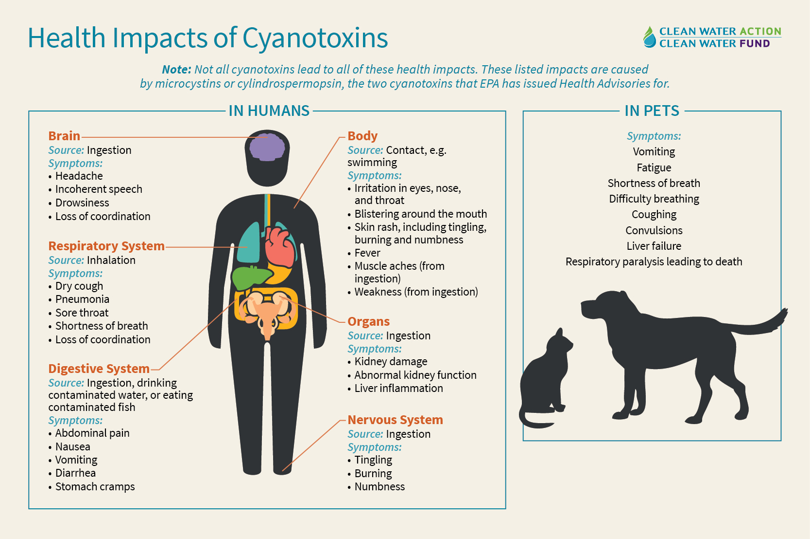
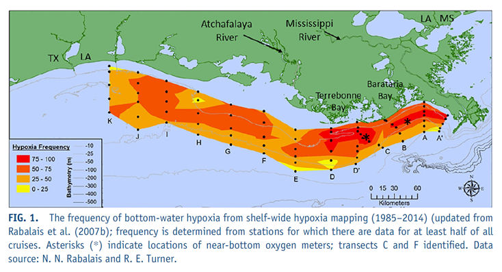
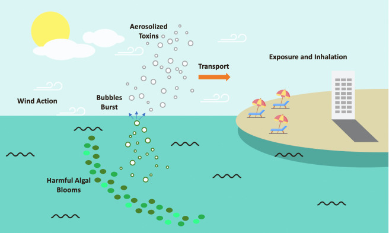
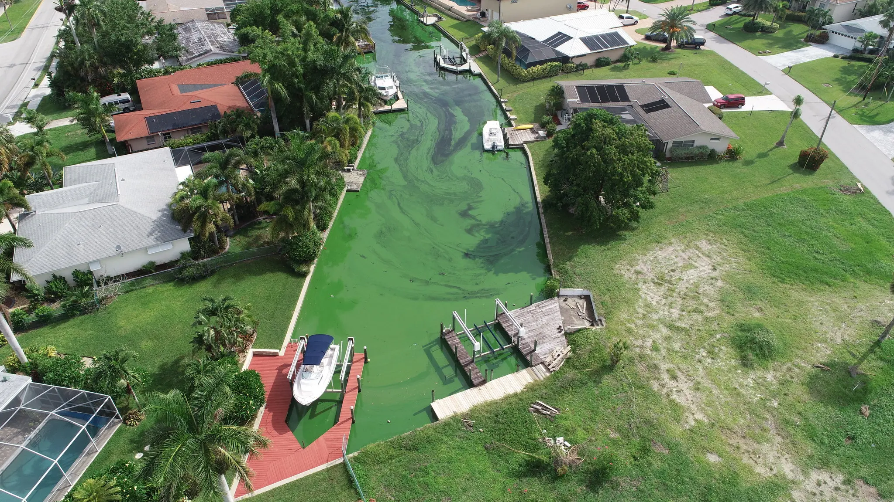

The Facts
Algal blooms refer to an overgrowth of algae in water. However, not all of them are harmful as only a few types of algae produce toxins. Harmful algae blooms (HABs) are blooms that negatively impact humans, marine and freshwater ecosystems, and coastal economics. The two different types of harmful algae blooms are marine HABs, which discolor the water in shades of red and brown, and freshwater HABs, which discolor the water bright green or blue-green. Like most environmental issues, HABs have various causes like nutrient pollution and factory wastewater discharge, and many effects like decreases in biodiversity and changes in water quality. Harmful algal blooms are a problem in all 50 states, and they can have a severe impact on our health, economy, and environment if we don’t address them.


Common Types of Algae Bloom
Algal blooms can be harmful and toxic, but not all of them are. There are hundreds of different types of algae and only a few produce toxins. Even so, a bloom doesn’t have to produce toxins to be considered environmentally harmful. Blooms are harmful by negatively impacting humans, marine and freshwater environments, and coastal economies.
- Marine HABs: Dinoflagellates and diatoms, different types of microalgae, are usually the cause of algal blooms in marine waters. The blooms discolor the water in different shades of red and brown. Marine HABs produce toxins that can cause respiratory irritation in humans, shellfish contamination, neurotoxic shellfish poisoning, ciguatera poisoning in fish, and can affect the central nervous system of fish, marine mammals, and birds.
- Freshwater HABs: Cyanobacteria, a type of blue-green algae, are usually the cause of algal blooms in freshwater which discolor the water bright green or blue-green. Cyanobacterial HABs commonly cause gastrointestinal illness in humans, and mortality in pets, livestock, and wildlife.
Causes of Harmful Algae Bloom
The primary reason for HABs is nutrient pollution (eutrophication), an event where the abundance of nitrogen and phosphorus create the perfect fertilizer for algae, promoting the overgrowth of harmful algae.
Global Warming
Global warming creates extreme weather conditions, such as droughts and hurricanes. Droughts themselves do not pose a problem for algae bloom, but when droughts end, there is heavy precipitation, which contributes to soil runoff into bodies of water, promoting algae growth and as a result HAB. Additionally, global warming causes a rise in water temperature, which further creates the perfect living environment for harmful algae groups.
Poor Agricultural Practices
Overfarming: Mass amounts of land are developed for farming, and in turn, the stability of the soil decreases. Soil contains large amounts of nitrogen and phosphorus, which are both necessary for the growth of algae. By itself, soil poses no threat to the water environment, as they are mainly separated, however, when there is heavy precipitation, the soil can easily be washed off due to its instability from over farming into nearby water sources. As a result, there is an accumulation of soil and its minerals in the water, creating an environment suitable to algae overgrowth.

Overbreeding and Overgrazing: In addition to land being used for crops, mass amounts of animals such as cows, are also bred. As a result, there is an increase in the amount of manure and overgrazing. Manure consists of high amounts of nitrogen and phosphorus that create the suitable fertilizer. However, when done in extremity, there becomes too much nutrient in the soil, and with heavy precipitation, these soil are mass deposited into water sources. With overgrazing, it poses the same problem as over farming as there is less stability in the soil.
Factory Wastewater Discharge
Wastewater is the post processing substances of water coming from buildings. These wastewater typically include an abundance of nitrogen and phosphorus, which create the prime fertilizer for algae. The wastewater are typically discharged into bodies of water, land or reused. When there is an excess amount of discharge into soil or bodies of water, it contributes to nutrient pollution, which enables the overgrowth of harmful algae.
Effects of Algae Bloom
Decreasing Water Quality
Drinking water can be a source of exposure to toxins caused by nutrient pollution. Drinking contaminated water affected by HABs can cause health problems such as rashes, stomach or liver illness, respiratory illness, and other neurological effects.
Decrease in Biodiversity
In both marine and freshwater, harmful algal blooms can kill fish, shellfish, and any marine animal that uses oxygen to survive, as the overgrowth of algae depletes oxygen rapidly, creating an area known as hypoxia. An example of this area would be the Gulf of Mexico, with the size of hypoxia reaching 3058 square miles. As a result, food chains are disrupted and all forms of living organisms are affected.
Air Pollution
Nutrient pollution in the air can cause acid rain which damages lakes, streams, forests, and grasslands across the country.
Airborne nitrogen compounds like nitrogen oxides can contribute to other air pollutants like ground-level ozone, which contributes to smog. Ozone can be carried for many miles and can damage trees and harm the appearance of vegetation.
Economic Losses
Fishing and shellfish industries are hurt by tens of millions of dollars per year by harmful algal blooms that kill fish and contaminate shellfish.
Clean water can increase the value of a nearby home by 25%. On the contrary, prices of houses with views of the water can decrease if there is an algal bloom nearby.
